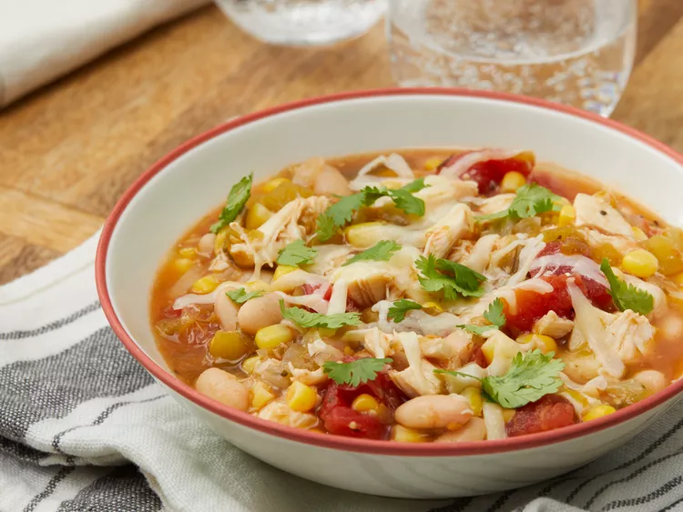

White Bean Chicken Chili

Description
An excellent winter meal that can be made delicious even with leftover chicken,
With simple ingredients but lots of flavors, mark this recipe down for those winter days
when you might not feel like cooking but still want a dish that will keep you warm.
Ingredients
- Onion
- Garlic
- Chicken broth
- Tomatillos
- Dice tomatoes
- Green chiles
- Dried oregano
- Ground coriander
- Cumin
- Cooked chicken
- White beans
- Whole kernel corn
- Salt
- Black pepper
Steps
- Cook onion and garlic
- In same pot, stir in broth, tomatillos, tomatoes and chiles
- Stir in oregano, cumin and coriander
- Simmer for 10 minutes
- Add chicken, beans and corn
- Seaon with salt and pepper
- Enjoy!